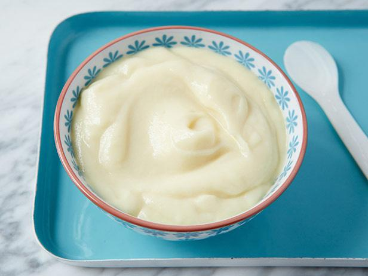

Return to homepage
Vanilla Pudding

Pudding good
Prep Time: 10m | Cook Time: 1 hr (hands off) | Total Time: 1hr 10m
Ingredients
2 tablespoons butter, softened
Instructions
In 2-quart saucepan, mix sugar, cornstarch and salt. Gradually stir in milk. Cook over medium heat, stirring constantly, until mixture thickens and boils. Boil and stir 1 minute.
Gradually stir at least half of the hot mixture into egg yolks, then stir back into hot mixture in saucepan. Boil and stir 1 minute; remove from heat. Stir in butter and vanilla.
Pour pudding into dessert dishes. Cover and refrigerate about 1 hour or until chilled. Store covered in refrigerator.